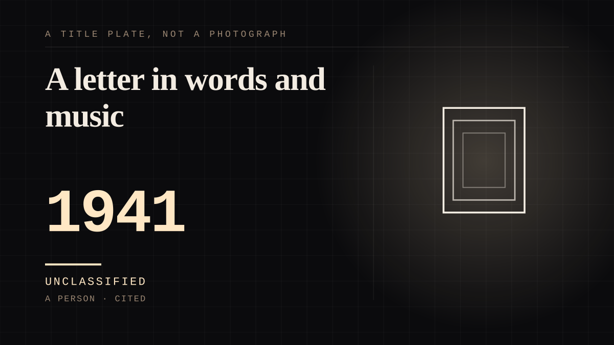

A person · 1941 ·
A letter in words and music
A radio programme addressed the men of the forces as a letter in words and music, and the voice behind it kept the address running for the rest of her life.

An institution pointed a microphone at a nation at war and put one voice behind it. Vera Lynn's wartime programme, Sincerely Yours, went out on 9 November 1941 at half past nine, and it was described as 'to the men of the forces - a letter in words and Music' - a phrase that reads like a job description for this site's whole subject. The Oxford Dictionary of National Biography's summary is the flat one: 'Her reassuring voice and mastery of radio made her the forces' sweetheart in the Second World War - a connection she fostered with her ongoing commitment to veterans and memory of the war.' Everything in the tie was addressed to people she would never meet, on a schedule, by name of service. The programme was taken off the air after the broadcast of 22 March 1942 and stayed off for eighteen months; the successor programme, 'It's Time for Vera Lynn', began on 31 October 1943. The work was finished before the audience arrived, which is the shelf's property. 'We'll Meet Again' - written by Ross Parker and Hughie Charles - was first recorded on 28 September 1939, in the opening weeks of the war, by Lynn with Arthur Young; most of the people who would spend five years with the song had not yet been sent anywhere. A pressed recording cannot be caught changing and a broadcaster was never in the room, which is the distance this shelf describes. And then the address outlived its occasion, which is the unusual part. The commitment ran for decades after the war - the article records a Burma Star received in 1985 - and in 1953 she re-recorded the song with British Armed Forces personnel included on the recording. A 2000 poll made her the Briton who best exemplified the spirit of the 20th century; in 2009, at 92, she became the oldest living artist to top the UK album chart; and at the start of the pandemic the Queen referenced the song in a rare televised address to Britain and the Commonwealth, months before Lynn's death in June 2020. Broadcast bonds are not answered; the rare thing here is a near side that never stopped sending. Recorded in the first weeks of the war and played in a Cold War broadcast plan for use after a nuclear attack, the song kept being aimed at whoever was still listening.
Where it sits
1900 1900-1949 · 1941 1949
Provenance · 2 source record(s)
- retrievableBorn 20 March 1917, died 18 June 2020; ODNB: 'Her reassuring voice and mastery of radio made her the forces' sweetheart in the Second World War - a connection she fostered with her ongoing commitment to veterans and memory of the war'; Sincerely Yours premiered 9 November 1941 at 21:30, described as 'to the men of the forces - a letter in words and Music'; off air after the 22 March 1942 broadcast for eighteen months; 'It's Time for Vera Lynn' from 31 October 1943; the 1953 re-recording with British Armed Forces personnel; the 1985 Burma Star; the 2000 poll ('the Briton who best exemplified the spirit of the 20th century'); in 2009 she became the oldest living artist to top the UK album chart; the Queen's televised address of 5 April 2020 referencing the song.Wikipedia. 'Vera Lynn.' ↗
- retrievableA 1939 song by Ross Parker and Hughie Charles; first recorded on 28 September 1939 by Vera Lynn with Arthur Young; later included in the BBC's Cold War plan for broadcasting after a nuclear attack (the Wartime Broadcasting Service); re-recorded in 1953.Wikipedia. "We'll Meet Again." ↗
Connected · 3 out, 0 in
It sits in